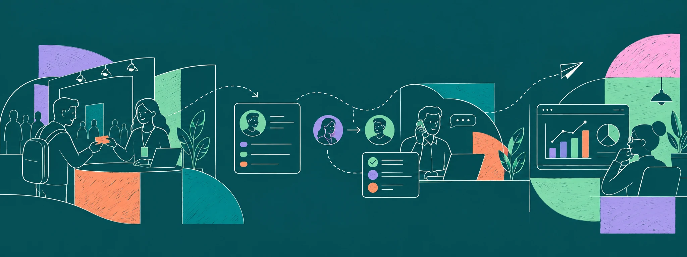
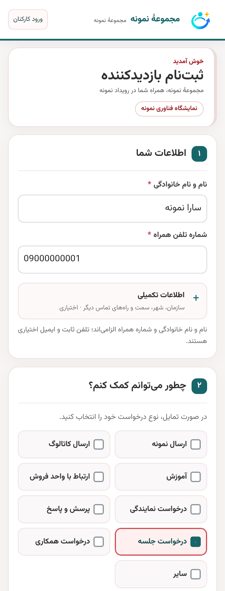
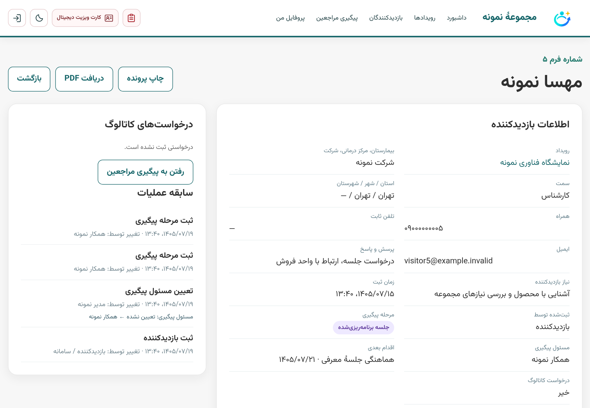
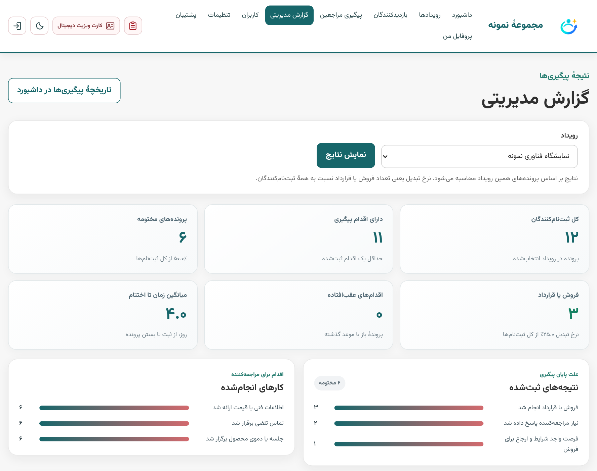

۰۱در غرفه
ثبت ارتباط، همان لحظه
بازدیدکننده فرم را با موبایل تکمیل میکند یا همکار غرفه اطلاعات را وارد میکند. نوع درخواست، توضیح و اطلاعات تماس در پرونده ثبت میشوند.
نرمافزار مدیریت بازدیدکنندگان نمایشگاه
اطلاعات بازدیدکنندگان را ثبت کنید، پیگیری را به مسئول مشخص بسپارید و گزارش اقدامها و نتیجهها را ببینید.

نسخهٔ دمو در دسترس است. رفع اشکال و افزودن قابلیتهای جدید ادامه دارد.
یک نگاه به تجربهٔ کار
اطلاعات تماس، درخواست مراجعهکننده، یادداشت همکار و قدم بعدی در یک نمای منظم کنار هم قرار میگیرند؛ برای دسترسی در زمان پیگیری.

نمایش تصویر در اندازهٔ کامل
نمایش تصویر در اندازهٔ کاملاز غرفه تا نتیجه
فرایند روشن کمک میکند جزئیات دیدار همان روز ثبت شود، مسئولیت مشخص بماند و نتیجه برای مدیر قابل بررسی باشد.
بازدیدکننده فرم را با موبایل تکمیل میکند یا همکار غرفه اطلاعات را وارد میکند. نوع درخواست، توضیح و اطلاعات تماس در پرونده ثبت میشوند.
مسئول پیگیری تعیین میشود و پرونده به کارتابل او میرود. اگر مدیر مسئول را تغییر دهد، مالک تازه میتواند مورد را در کارتابل خود دنبال کند.
اقدامهای انجامشده و تاریخ اقدام بعدی ثبت میشوند. با مختومهکردن پرونده، نتیجهٔ پیگیری هم برای گزارش مدیریتی جمعبندی میشود.
امکاناتی برای روز نمایشگاه و بعد از آن
هر قابلیت برای نگهداشتن زمینهٔ گفتگو، روشنکردن مسئولیت یا دیدن خروجی رویداد طراحی شده است.
اطلاعات رویدادها در یک سامانه ثبت میشوند تا کاربر بتواند به فهرست مراجعهکنندگان، پیگیریها و گزارش هر رویداد دسترسی داشته باشد.
نام، راههای تماس، سازمان، شهر، درخواست و توضیحات را در یک فرم فارسی و راستچین جمع کنید؛ فیلدهای اختیاری هم برای فرمهای شلوغ پنهان میمانند. فرم ثبتشده نیز در صورت اجازهٔ مدیر قابل ویرایش است.
برای هر پرونده مسئول پیگیری مشخص کنید. مدیر میتواند واگذاری را تغییر دهد و کاربر جدید پروندهٔ واگذارشده را در کارتابل خود ببیند.
یادداشت متنی، عکس کارت ویزیت و فایل صوتی را کنار سابقهٔ مراجعه ثبت کنید تا زمینهٔ گفتگو هنگام تماس بعدی فراموش نشود.
اقدامهای انجامشده و گام بعدی را در پرونده نگه دارید. پس از پایان کار، کاربر نتیجهٔ مختومهشدن را برای جمعبندی مدیر انتخاب میکند.
مدیر گزارش مراجعهکنندگان، اقدامهای ثبتشده و نتیجههای نهایی را مرور میکند تا وضعیت پیگیریها و بازده هر رویداد را بهتر بسنجد.
در فهرستها بین مراجعهکنندگان و پیگیریها جابهجا شوید، موارد مهم را ستارهدار کنید و برای مرور راحتتر از صفحهبندی استفاده کنید.
روشهای درخواستی مراجعهکننده را ببینید، روشهایی را که واقعاً ارسال کردهاید انتخاب کنید و همه را با یک اقدام در سابقه ثبت کنید.
فرم را با نام و رنگ سازمان، لوگو و راههای تماس معرفی کنید. کدهای QR نیز برای اطلاعات تماس و دسترسی به کاتالوگ در دسترس هستند.
برای تصمیمگیری، نه حدسزدن
وقتی پیگیریها و جمعبندی نهایی ثبت شوند، مدیر میتواند از نمای گزارش مسیر پروندهها را مرور کند و عملکرد رویداد را بر اساس دادههای ثبتشده ارزیابی کند.

نمایش تصویر در اندازهٔ کاملپیش از شروع بدانید
چند پاسخ کوتاه دربارهٔ استفاده از سامانه در فضای نمایشگاه.
سامانه برای اجرا روی رایانهٔ مجموعه و استفاده از دستگاههای متصل به شبکهٔ محلی غرفه طراحی شده است؛ روش استقرار باید متناسب با شبکهٔ محل تنظیم شود.
مدیر میتواند مسئول جدید را انتخاب کند. پرونده در دسترس کاربر تازه قرار میگیرد و تغییر واگذاری در سابقهٔ آن قابل مشاهده است.
کاربر نتیجهٔ نهایی را هنگام مختومهکردن پرونده ثبت میکند. مدیر از بخش گزارش پیگیری و ممیزی، نتیجهها و اقدامهای ثبتشده را مرور میکند.
نام سازمان، لوگو، رنگ و اطلاعات تماس در تنظیمات هویت سازمان قرار میگیرند و فرم ثبت با این اطلاعات نمایش داده میشود.
تیانا سافت · مدیریت ارتباطات رویدادی
برای آشنایی با روند کار و بررسی نیازهای نمایشگاه خود، با ما گفتوگو کنید.